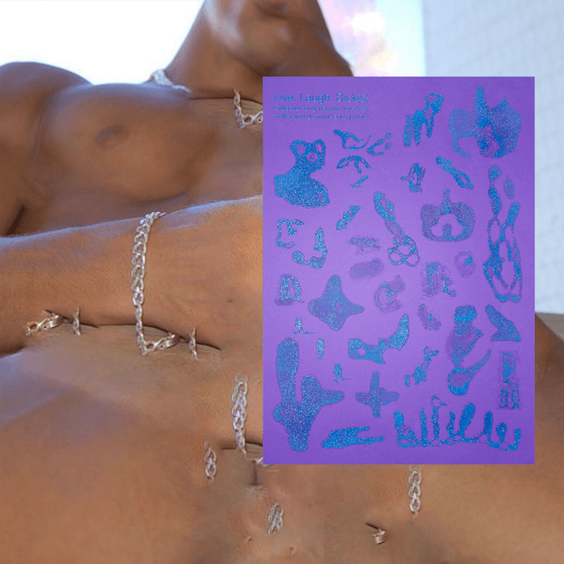
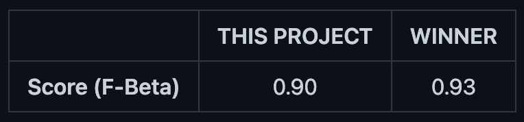

Nhan Phan is an artist and an educator based in Ho Chi Minh City, Vietnam.
Born and raised during the era of Yahoo! 360 Blog, Flickr, and Tumblr, Nhan grew to use photography as his creative platform by making journals, scrapbooks, and zine ever since his young age. He views photography as a documentation of time gone by, which holds not just the visual but also the essence of the world he lives in. The obsession of archiving images later expanded with his training in machine learning. Through analysis, feature learning, and generative algorithms, Nhan's latest work explores how the realm of bygone image archives influences the way we revisit our past, understand our present, and pivot our future.
(2022) Beach Pocket
First thing I said when a guy took my shirt off was always ⎯ “Am I too skinny?”
From 2019 to 2022, my best friends and I made occasional getaways to the beaches in Vietnam. There we swam, sunbathed, read, danced, and radiated under the sun. There I found comfort in my own skin. There I realized the beauty of our shapes. The whole process is a healing journey for me.
This pocket notebook includes all the portraits and self-portraits that I documented during the time.
“My boyfriend once said that I was so tiny That he could carry me in his pocket anywhere So put me in your pocket Use me as your time goes by Use my body as your late-night canvas Write on me Compose on me Fast on me Slow on me Release on me Spit on me Piss on me Bleed on me” ✣＊✣ Produced by wedogood. 64 pages on risograph using aqua, yellow, flourescent pink.
(2022) ガイジャ別府
Every year when the cicadas start to sing, I miss Japan dearly, as if a part of myself had been buried under the Minami Ishigaki park, where we hung out by the swings, singing, and smoking.
This summer, as the cicadas are singing again, I invited Cao Mieu to join me in a conversation about our Japanese memoirs. But instead of texts, we would reply to each other with artworks. Every page is a response to the previous. All communication takes place only within these pages.
I lost my residence card years ago. Mieu still has hers, so she will hereby board the page first.


(2022) Live. Laugh. Dick(s).


Back in April, wedogood invited me to join their zine with the theme of “Love Machine. Machine Love”. And all I brought was erotism, fantasy, and re-imagination. This poster is a stand-alone version of my work in the zine. More than a collection of quirky-looking toys, It reflects our current perception of sex toy design (dildos and butt plugs in particular) while suggesting new boundaries for toy design.


After being trained with 3000 photos of toys, the generative model clearly gets the idea that a sex toy needs to be pointed (of course). But it takes the idea further by re-imagining toys with multiple heads, and toys with irregular shapes or shapes that are different from cylinders. Several generated samples also include toys that are bound together since e-commerce often places their toys next to each other in product photos. If such an arrangement stimulates the buyer, then why not include them in the real product design? Many of the generated samples also propose getting rid of the inside of the toys as it is not a significant feature. They suggest void, disjoint parts, transparent material, and anything else but the common solid shape. Pleasure has its own curiosity. And maybe toys for pleasure should also be more suggestive, rather than adaptive.
This project is built on my custom GAN model, inspired by StyleGAN2. The StyleGAN2 architecture itself is gigantic. To afford training, I made multiple adjustments in the architecture, including downsizing the output image size to 128x128. This seriously damaged the print quality but Risograph helped me bypass that. I also divided the training into multiple sessions + used the Tensorflow Data Dataset & Tensorflow Record to optimize the whole training speed. All are for this project to be run on the free resource of Google Colab, which has a limited quota every day. So much engineering just to have more dicks while paying less ü•¥


WHY RISOGRAPH? Generative art is not for size queen. Artworks generated from ML model struggle to have a good resolution. A simple image of 300x300 would take 90,000 units when being flattened. It means that a larger output images come with a larger cost of computation. It often requires days of training on expensive GPU. When it comes to printing, this limit in output results in pixelating details, blurry edges, and inconsistent separation between object and background. Not only that, generative images oftentimes have the checkerboard effect, as a result that the machine “painted” each pixel independently and lack of perception of the image as a whole.
In order to produce this digital artwork in high-quality print (A3), we first put the 128x128 generated images through a half-toned treatment - a technique to simulate the image tone through dots. By carefully adjusting the dot size, we gave the pixelated images a sharper optic illusion in general. A subtly similar pair of aqua ink and purple paper were then chosen to let the half-toned dots blend smoothly with the background. The various size of dots + different % of ink embrace the blurry edge. The aqua ink also expands optically when we tilt the poster to different light direction. Object edges “fade” gradually into paper like chalk. The drawback of pixelating and not having sharp edges is now a compliment toward the initial inspiration of stains.

Crossing between multiple forms ⎯ from photographs, to numbers, to logic, to a new form of photographs, then comes alive as a print. A journey from modern computation to a long-lived printing technique; from abstract to physical, with which we can see, can touch, and can interact. I think it is beautiful.
(2021) Watching Wes Anderson Without Watching Wes Anderson


In 2021, Saigon went dormant under COVID lockdown. No one can set foot beyond their door. So did I and my housemate. We ended up doing a marathon of Wes Anderson movies. Going through all his movies was like walking on a train, that moving so fast, that all the beautiful scenes become color running across my window. Color is the main actor in his movies.
The normal way to watch a movie requires audiences to sit through frame by frame. A movie presents itself linearly with time with visual elements built up on top of each other. This project challenges that concept and aims to understand the visual landscape of Wes Anderson movies through just one single look.
To achieve that, each frame of the film was flattened from a rectangular shape (720x1280) to into a long strip (1x921,600). Then, all the strips were stacked on top of each other to create the final artwork. As a result, vertically, from top to bottom, we are “watching” the movie from the beginning to the end. Horizontally, from left to right, our eyes are moving zig-zag in one scene of the movie (left to right, top to bottom).
In the end, this project reveals how Wes Anderson uses colors to create the world surrounding his characters, and how that colorful world flows according to his characters' emotion.
(2020) Enhanced Super Resolution GAN on Tensorflow 2

VISION2020 aims at recovering a high resolution image from a low resolution one. The project is based largely on the excellent research of Xintao Wang, et al. on ESRGAN (2018) and their implementation using Pytorch. Inspired from the research, my version of ESRGAN is optimized and built entirely on Tensorflow 2.0. It successfully resizes the image up to x64 on square area.
Single image super-resolution (SISR), as a fundamental low-level vision problem, has attracted increasing attention in the research community and AI companies. SISR aims at recovering a high-resolution (HR) image from a single low-resolution (LR) one. Since the pioneer work of SRCNN proposed by Dong et al., deep convolution neural network (CNN) approaches have brought prosperous development. Various network architecture designs and training strategies have continuously improved the SR performance.
The Super-Resolution Generative Adversarial Network (SRGAN) is a seminal work that is capable of generating realistic textures during single image super-resolution. However, the hallucinated details are often accompanied with unpleasant artifacts. To further enhance the visual quality, we thoroughly study three key components of SRGAN - network architecture, adversarial loss and perceptual loss, and improve each of them to derive an Enhanced SRGAN (ESRGAN).
In particular, we introduce the Residual-in-Residual Dense Block (RRDB) without batch normalization as the basic network building unit. Moreover, we borrow the idea from relativistic GAN to let the discriminator predict relative realness instead of the absolute value. Finally, we improve the perceptual loss by using the features before activation, which could provide stronger supervision for brightness consistency and texture recovery. Benefiting from these improvements, the proposed ESRGAN achieves consistently better visual quality with more realistic and natural textures than SRGAN.
fig1 ⎯ (x4 per dimension) generated image successfully retains small detail like the strip at the shoulder area and the human head.

fig2 ⎯ (x4 per dimension) Natural features like eyes are well reconstructed.
fig3 ⎯ (x8 per dimension) Double challenging, then model successfully reconstruct pattern and lines.

fig4 ⎯ (x8 dimension) Letters are brought back to vision.
Full project code is available on Github
(2020) Vietnamese Handwritten Optical Character Recogition
Optical Character Recognition is one active field that bridges between computer vision and natural language processing. As much as the field emerges within machine learning community, it still performs poorly on local language, including Vietnamese with our distinctive symbol (ễ, ẩ, ứ for example). The lack of data is one of the main reason behind it. In 2018, Cinnamon AI aimed to solve that challange by hosting a hackathon with a Vietnamese handwritten dataset. It includes all the address written in Vietnamese. The model can be immediately apply in post service to alleviate the need of manual input.
All code of this project can be found on my Github üëæ
❊ RESULT ❊ My project successfully achieved Character Error Rate: 0.04 Word Error Rate: 0.14 Sentence Error Rate: 0.82
The hackathon's winner score is 0.1x on the Word Error Rate. Other metric results were not disclosed.
❊ SAMPLE PREDICTIONS ❊ T = True Label P = Prediction
❊ IMAGE PREPROCESS ❊ The preprocess was built mainly on OpenCV with 3 phases 1/ Thresholding 2/ Resize to 128x1024 3/ Remove Recursive (reference to A. Vinciarelli and J. Luettin) (Before - After)


❊ MODEL ❊ CRNN + CTC Loss is used to solve this challenge. CNN blocks with skip connections (inspired by ResNet50) are used to extract the features from the input image. The extracted feature map will be then passed through the LSTM layers.

Training Log
(2020) Understand The Amazon From Above

Every minute, the world loses an area of forest the size of 48 football fields. And deforestation in the Amazon Basin accounts for the largest share, contributing to reduced biodiversity, habitat loss, climate change, and other devastating effects. But better data about the location of deforestation and human encroachment on forests can help governments and local stakeholders respond more quickly and effectively.
This analysis uses Deep Learning to classify the spatial images of the Amazon forest taken by the satellite. From that, it hopes to shed a light on understanding how the forest has change naturally and manually. Thus, help preventing deforestation.

The project is built on dataset from the Kaggle competition in 2016. It contains more than 40.000 images, taken by Planet using sattelites.
Planet, designer and builder of the world’s largest constellation of Earth-imaging satellites, will soon be collecting daily imagery of the entire land surface of the earth at 3-5 meter resolution. While considerable research has been devoted to tracking changes in forests, it typically depends on coarse-resolution imagery from Landsat (30 meter pixels) or MODIS (250 meter pixels). This limits its effectiveness in areas where small-scale deforestation or forest degradation dominate.
☆ RESULT The project successfully got the score of 0.90 on the official test set.

☆ CHALLENGE
1️⃣ Multi-label: Each image is labeled with multiple tags (at least 2, at max 9). The tags fall into 17 categories, which are the forest landscape types. Since the tags in each label are mutually exclusive, they are treated as multiple binary classification problems. Thus, binary cross-entropy are chosen to be the loss function.
2️⃣ Imbalance: The dataset is severely imbalance with tags like Primary or Agriculture appear in 90% of the dataset. While other tags like Blooming or Conventional Mine can only be seen in less than 500 observations (even less than 100 for Burn Down).
In the first base-line experiment, the model was totally bias toward the major tags. It predicts the major tags to appear in every data and almost never made a prediction with the minor tags. To tackle the problem of imbalance dataset, evaluation metrics must be chosen carefully. F2 is chosen to be the main metrics to evaluate the training. It watches over the harmonic mean between the Precision and Recall while favors Recall specifically. In other word, it is the attempt to reduce the number of False Negative, where the model fails to identify the absence of a tag.
3️⃣ Optimization: 400.000 images, a CNN model, and Google Colab's limited resource do not seem to mix well together. The training was slow at first and interupted often. Several improvements, mostly on the Tensorflow pipeline, were conducted to speed up the training: Using TFRecord to convert the raw images into byte-like data to reduce the amount of time spending on reading data from their paths.
Using tf.data.Dataset with shuffle, map, batch, prefetch to optimize the reading data process by redistributing the tasks for agents to work concurrently, thus, avoid bottleneck. An attempt to use cache was also made but failed due to the limited RAM.
Processing image with Tensorflow: The dataset contains images in JPG - RGBA. The built-in decode function tf.io.decode_jpeg only works on 1 or 3-channel image. Attempt on encoding a JPG RGBA image returns black black and black. We need a tensorflow encoding function to work in this part because the pipeline is built entirely on Tensor for the optimization purpose. To tackle the problem, the raw images were first read by Matplotlib then converted into byte-like and wrote into TFRecords. When reading the data from TF Record, instead of using the built-in decode image function, we use tf.io.parse_tensor following with reshaping.
☆ SAMPLE PREDICTIONS

Full code of this project can be visited at Google Colaboratoryüëå